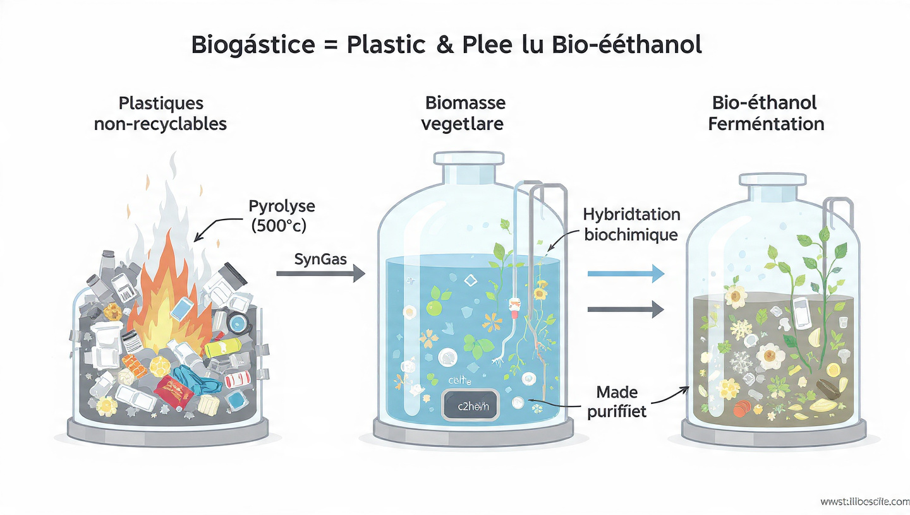

Transformer nos déchets en souveraineté énergétique locale
La Synergie Biochimique : Plastique & Biomasse
Pourquoi associer Plastique et Végétal ? Le plastique est extrêmement riche en Carbone et en Hydrogène, mais manque d'Oxygène pour former des alcools (comme l'éthanol). La biomasse végétale (sucres de betterave, pomme, avoine) apporte cet oxygène naturel et les agents de fermentation. L'hybridation des deux permet de créer un carburant liquide stable et non brevetable car basé sur des réactions naturelles connues.
Les Deux Piliers de la Transformation

1. Craquage Thermique (Pyrolyse)
Les déchets plastiques (Polyéthylène, Polypropylène) sont chauffés dans un réacteur fermé, sans oxygène, entre 400°C et 600°C.
Cette action casse les longues chaînes de polymères (liquéfaction) pour produire un gaz riche en énergie, appelé Syngas (Gaz de Synthèse), composé de monoxyde de carbone (CO) et de dihydrogène (H2).
2. Fermentation Végétale
En parallèle, des matières végétales locales et peu coûteuses (déchets agricoles, avoine, résidus de pommes) subissent une macération et une fermentation enzymatique.
Les levures transforment les sucres naturels en alcool, préparant le milieu idéal pour accueillir les gaz issus de la pyrolyse.
L'Hybridation : La Synthèse Finale
C'est ici que réside la force de l'ingénierie publique libre. Au lieu d'utiliser des catalyseurs chimiques industriels onéreux et brevetés, nous utilisons la fermentation des gaz (Syngas Fermentation) couplée au moût végétal.
Syngas (CO + H2)
+
Bactéries & Moût Végétal
➔
Bio-Éthanol (C2H5OH)
Des micro-organismes acétogènes (présents naturellement) se nourrissent du gaz de synthèse (carbone et hydrogène du plastique) pour produire de l'éthanol. Le mélange final est ensuite distillé de manière classique (alambic) pour obtenir un carburant pur, prêt à alimenter des moteurs adaptés (FlexFuel).
Calculateur d'Impact : Bilan Carbone (ACV)
Pour l'ADEME ou les certifications environnementales, il est crucial de démontrer le gain carbone de l'opération par rapport au scénario du "laisser-faire" (enfouissement du plastique + extraction de pétrole pour le carburant de la commune).
Simulateur de CO2 évité
En détournant ces déchets de l'enfouissement pour substituer un carburant fossile, vous évitez l'émission de :
0 Tonnes d'équivalent CO2
*Méthodologie simplifiée ACV : Ce calcul intègre l'évitement de la dégradation anaérobie en décharge (méthane) et l'évitement de l'extraction/combustion d'essence fossile substituable (Ratio utilisé : 1T de plastique traité = ~2.2 T CO2e évitées au global).
Une Science Libre de Droits (Open Science)
Les processus de pyrolyse simple et de fermentation alcoolique sont connus depuis des siècles. En combinant ces deux approches dans un circuit thermodynamique fermé (la chaleur de la pyrolyse alimente la distillation du végétal), le procédé relève de l'état de l'art public. Aucun trust industriel ne peut empêcher une collectivité d'appliquer cette chimie élémentaire pour dépolluer ses sols.